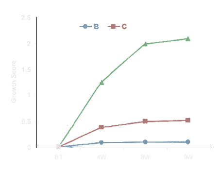

Proven Results
Mira Hair Oil (see “A” in chart) was tested against two other herbal formulations (B and C in chart) in a randomized double-blind placebo-controlled study to evaluate the effectiveness of hair oil in the management of hair loss.
The oils were tested on 192 adults, male and female who lost 60 hairs or more daily. Researchers measured hair density, elasticity, strength, and fragility.
As the chart shows, the Mira Hair Oil formulation significantly outperformed the other hair oils tested in stimulating new hair growth. Specifically, those subjects using Mira Hair Oil experienced 58% new hair growth after 8 weeks of use.
Ffter 8 weeks of use, the Mira Hair Oil reduced hair loss by 75%, cut down on dandruff by 71%, alleviated itching by 98%, and increased moisture 133%, which can give hair a shinier and more lustrous look.
How Does Mira Hair Oil Work?
Mira Hair oil seeps into your scalp, where it detoxifies the blood, exfoliates the pores of your scalp, and stops DHT from being produced - thereby allowing fast hair growth. No other hair care product does this safely, naturally, or as quickly. In fact - other well-know hair systems contain harmful chemical drugs and toxins that give you temporary hair growth but at the cost of you later experiencing chronic and permanent hair loss, together with a host of orther terrible side effects like birth defects, itchy scalp, scalp irritations, and a loss of libido.
Grow Hair 2-3x More Quickly
Before
After
Get results like this in only 3 months!
At any one time, your hair is under 3 stages of growth - the anagen, catagen and telogen phases. The anagen phase is where all the growth of your hair takes place. If your hair is not growing as fast as you’d like, it means that a low percentage of your hair is in the anagen phase. This can be caused by a few things:
- You may have too much DHT in your scalp. DHT is a male hormone that stops hair growth and causes hair loss by choking your hair follicles at the roots causing them to eventually fall out.
- You don’t have the right circulation of blood to feed your growing hair follicles.
- Your hair follicles are being plugged and clogged at the surface.
- You may lack a protein called VEGF, which is a protein whose job is to grow healthy, thick hair.
Mira Hair Oil provides your hair with minerals and oils that cure these 4 issues, and increases the percentage of hair that is in the anagen phase, causing the hair to start growing at a much faster rate
Significantly Reduce Frizz
Frizzy hair is almost always caused by dry, unmoisturized hair as well as a depletion in natural oils.
Mira Hair Oil contains phytochemicals (checmicals that occur naturally in plants) that seep into your scalp, exfoliating your hair and increasing the moisturization of your hair. Because we use natural ingredients, you can use Mira Hair Oil every day without damaging your hair.
Promotes Thick, Natural Hair
Thick hair is achieved through cell division. Many studies on the hormone VEGF and the herb Asia sari radix have shown that it is indeed possible to achieve thicker hair, and faster growth through more cell division; further studies show that you can also increase the thickness of the hair follicle. Cell division is accomplished at the cellular level, and the only way to do this effectively is topically, and that is why you need to use an oil like Mira hair oil. It contains herbs like Asia sari radix that will cause cell division.
What’s in Mira Hair Oil?
- Octimum oil: This natural oil has been shown to promote follicular proliferation and enhance normal hair growth. In the laboratory, octimum has regrown lost hair in cancer-induced rats.
- Citrullus colocynthis: In an animal study published in Natural Product Research, a petroleum ether extract of Citrullus colocynthis was shown to promote growth of hair follicles just as effectively as the FDA-approved drug Finasteride, only without the side effects.
- Cuscutareflexa: Inhibition of 5alpha-reductase activity by petroleum ether extract of Cuscutareflexa suggests that it may reverse androgen-induced alopecia by preventing conversion of testosterone to dihydrotestosterone (DHT) – a hormone that causes hair loss.
- Eclipta Alba : Also known as Bhringraj (which translates to “king of hair”), this plant was demonstrated in a study published in the Journal of Ethnopharmacology to grow hair in lab mice. It can strengthen hair roots, control hair thinning, and prevent premature graying and alopecia.
- Ginkgo biloba : Rich in antioxidants, ginkgo biloba increases blood flow to the hair follicles in the scalp, strengthening and stimulating the hair shaft. Promotes the anagen hair growth stage.
- Hibiscus : contains calcium, phosphorus, iron, vitamin C, vitamin B1, and riboflavin; these stimulate thicker hair growth and prevent premature graying. This plant extract boosts hair growth 6% faster than minoxidil -- with no side effects.
- Trigonella : In a 7.5% concentration, trigonella shows excellent hair growth activity when compared with a 2% minoxidil ethanolic solution. A study published in Pharmacognosy Journal found that an herbal formulation including trigonella “showed significant reduction in hair growth initiation time.”
- Asiasari Radix : A study with lab mice published in the Journal of Dermatological Science showed that Asiasari Radix was the most potent plant for stimulating hair growth, increasing protein synthesis within hair follicles. Asiasari Radix works by boosting VEGF, a protein that controls hair growth and follicle size.
Get Thicker, Longer Hair
Buy Mira Hair Oil Today!
Today only: Use code 23XV for 20% off!
Secure Checkout. We'll never share your information.

Customer Testimonials
“Half an inch of hair growth monthly”
“I purchased the Mira Hair Oil because I have brittle bleached blonde hair that was breaking off at the touch,”
writes Stephanie White, Wasilla, AK. “With the use of Mira Hair Oil every other day, it has made my hair
stronger, shinier, and silkier to the touch. Mira Hair Oil has restored my natural wave and body. This oil has
helped me feel better about myself and my hair. I feel less insecure about leaving the house now since using the
Mira Hair Oil. This is a natural product designed to add life and luster to hair that is over-processed; it has
helped my scalp heal from the harsh bleaching process. With daily massaging to the scalp, Mira Hair Oil has
stimulated my hair follicles to grow. I was averaging ¼ of an inch hair growth each month. Now, after using Mira
Hair Oil, I am at half an inch each month. That is double the growth.
“All my hair problems stopped”
“Mira Hair Oil is really amazing,” writes Rosie King, Encino, CA. “From the very first time I started using it,
my hair texture changed; it is very soft, manageable, and my curls are beautifully defined. I have used it 2 to
3 times a week for the past 4 months and all my hair problems stopped. My scalp is very clean and healthy, and
there is a lot of baby hair.
“Hair growth in a month”
“I was desperate for something that was going to make my hair long, thick, and healthy,” says Melanie Mitchell.
“I started using Mira Hair Oil every other night, rubbing it into my hair, massaging the scalp for 10 minutes
before bed. I’ve only been using Mira Hair Oil for a month but I’ve already seen hair growth. I used to have dry
hair and a dry scalp, and since using Mira Hair Oil my hair has been soft and shiny, and also my scalp has been
dandruff and itch-free.”
“My hair stopped falling out”
“I have had serious hair loss for about 3 years, and have spent lots of money on products that have been no
good,” explains Lladira Garcia, Crescent City, FL. “Then I purchased Mira Hair Oil and was happy for the first
time. Within 2 weeks, my hair stopped falling out, and I was overjoyed to see that there was no hair left on the
brush. Now I have long nails, nice skin, thick hair, and I feel great!”
“Put almost 3 inches of hair on my head”
“A few months ago, my hair started to fall out and refused to grow. I was so scared that when I saw your ad, I
jumped on the offer. After all, with your money-back guarantee, I had nothing to lose. In just 3 months using
Mira Hair Oil, I have put over 2.8 inches of hair on my head. My hair is long and heavy, and has stopped
prematurely graying. I don’t know what I would have done without Mira Oil,” says Brenda Willis Leigh Acres FL
“New growth in thinning areas” - Linda Truesdale, Huntersville, NC.
“My hair not falling out any more”
“I have been using Mira Hair Oil for a month now, and what a big difference it has made,” raves Gwen. “My hair
is so soft and shiny. It is also much more manageable and healthy looking. My hair has grown one inch and has
not fallen out any more. Mira Hair Oil has given me hair that I’m happy with!”
“1.5 inches of new growth in 4 weeks”
Christine from the UK says, “After using Mira Hair Oil, I can grow my hair to a reasonable length in a
relatively short time, because it is looking longer than it ever did during a period of one month’s growth. I
estimate a growth rate for new hair of about 1 to 1.5 inches over the past 4 weeks.”
“Hair fuller and thicker”
“I got my mom to start using Mira Hair Oil as she has thin hair, and she can already see the results with just 2
months of use,” says Ross Lives. “Her hair is fuller and thicker and she notices fewer split ends. It even makes
the hair shine more than ever.”
“Grew 1.5 inches in 2 weeks”
“I bought Mira Hair Oil because I needed for my hair to grow healthy and to stop gray hair,” says Melissa
Dotson. “After 2 weeks, my hair grew 1.5 inches. I could not believe it!”
“I love my hair again”
Chris Blake writes: “I have used both the Mira Hair Oil and the Mira Shampoo 4 times now and I swear I’ll never
use another product on my hair. My hair has that youthful sheen again. It is beautiful. I love my hair again. I
was even called ‘Hot Momma’ by some stranger at the store.”
We have hundreds more testimonials from satisfied Mira Hair Oil users like Stephanie, Helen, Gwen, and Rosie on file at our offices. If you are ever in the neighborhood, we invite you to drop on by – we’ll set you up in a comfy chair with a cup of coffee, give you a fat stack of testimonial letters and e-mails, and let you see for yourself that they’re 100% real. We love getting visits from fellow professional stylists like you!
“2 inches of new growth”
“I have been using your Mira Hair Oil for over 2 months now and my hair is in the best health it has been since
I was a teenager,” writes Sharlyn Rakes, Aurora, CO. “I have always had very fine blonde naturally curly hair
that would consistently break off at the ends and seemed never to grow past my shoulders. After using Mira Hair
Oil, my hair has grown at least 2 inches already. The new growth is much stronger, thicker, and has more shine
than ever. I have also noticed that the new growth has no gray!”
“Even Harvard couldn’t help me”
Kerri Chewning says, “I could not wash my hair without noticing a dramatic hair loss. I visited a Harvard
Medical School licensed dermatologist who could do nothing to help me. When I discovered Mira Hair Oil, I used
the treatment as prescribed and witnessed a noticeable decrease in hair loss after 2-4 weeks. I also noticed
baby hair wisps around my forehead, where
hair had previously receded or fallen out entirely. And the hair I had thickened.”
“Doubled in thickness”
Haelli raves: “I finally have hair now – and a lot of it. My hair has doubled in thickness and has been growing
fast since I started to use Mira Hair Oil. Even the patches of loss have started to appear after being
stubborn.”
“Hair grows faster”
“Mira Hair Oil will change your hair,” raves Rebecca Wheeler, Darwin, Australia. “It will become super shiny,
bouncy, and thick. Your color will be brighter, your hair will be easier to manage, and it will grow faster.
Mira Hair Oil does everything it promises! I will never be without it.”
Get Thicker, Longer Hair
Buy Mira Hair Oil Today!
Today only: Use code 23XV for 20% off!
Secure Checkout. We'll never share your information.
Created by a PhD
Dr. [Name of Doctor], M.D
Miral Hair Oil was developed in collaboration with [name of doctor], who holds a PhD in Pharmacology, which makes him a perfect fit for designing a product for improving the health of hair. His skills and knowledge has allowed us to creat an extremely effective product that uses no harmful ingredients.